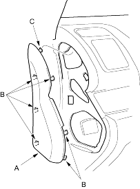

NOTE:
- When prying with a flat-tip screwdriver, wrap it with protective tape and apply protective tape around the related parts to prevent damage.
- Have an assistant help you when removing and installing the dashboard.
- Take care not to scratch the dashboard, body and other related parts.
- Put on gloves to protect your hands.
- Disconnect the negative battery cable and wait at least three minutes before beginning work.
- Remove these items:
- Driver's dashboard lower cover (see page 20-215)
- Driver's dashboard under cover (see page 20-216)
- Passenger's dashboard lower cover (see page 20-220)
- Glove box (see page 20-220)
- Dashboard centre lower cover (see page 20-217)
- Shift lever trim (see page 20-218)
- Kick panels, both sides (see page 20-206)
- Front pillar trim, both sides (see page 20-206)
- Steering column (see page 17-9)
- Shift lever, M/T (see page 13-48), A/T (see page 14-137)
- From outside of the passenger's door, gently pull out along the edge of the dashboard side cover (A) to release the hooks (B), then release the upper hook (C), to remove the cover.
